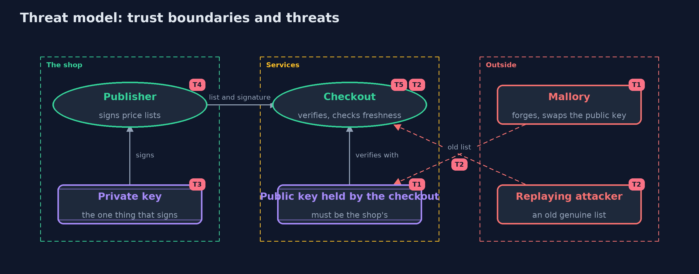

Threat Model — Digital Signatures (Ed25519)
A threat model answers four questions: what are we protecting, who or what could harm it, how, and what do we do about it. This one covers this project's own demo system, not a production deployment. Domain: an online store.
Scope
An online store's signed price list: the shop that signs, the services that verify, the public key they hold, and the version and expiry inside what is signed. It covers forgery by a service, a signature reused for another purpose, replay of an old list, a swapped public key and a stolen private key. It does not cover how public keys are distributed or revoked, or how the private key is stored.
What we protect (assets)
- The correctness and freshness of the price list.
- The shop's private key.
- The public key each service holds.
- The record of the newest version each service has accepted.
Who and what acts on the system
- The shop, which signs.
- The warehouse and the checkout, which verify.
- Mallory, who forges lists and tries to swap a public key.
- An attacker who replays an old genuine list.
- A thief who takes the private key.
Trust boundaries
A trust boundary is a line that data or a request crosses between parts that trust each other differently. Threats cluster where those lines are.
- Shop to services: lists and signatures cross a network an attacker can touch.
- Services to the public key they hold: the line the maths cannot draw.
- The shop's private key store: the one place that can sign.

Each dashed box is a trust boundary. A rose tag such as T1 shows where the threat of that number, in the table below, applies.
Threats, using STRIDE
STRIDE is a checklist of six kinds of threat: Spoofing (S), Tampering (T), Repudiation (R), Information disclosure (I), Denial of service (D), Elevation of privilege (E).
| Id | Kind | Threat | Where it shows up | Control in this project | What is left |
|---|---|---|---|---|---|
| T1 | Spoofing | A checker is given the wrong public key, so a forgery verifies | Checkout's public key |
None in this project: the checkout trusts the key it holds | Certificates, or a key pinned in the software, give the checker a trustworthy key |
| T2 | Tampering | A genuine old price list is replayed | Checkout.check |
Version and expiry are inside the signed bytes, and the checkout refuses older versions and expired lists | A checkout that forgets the newest version after a restart can be replayed; store it durably |
| T3 | Spoofing | The shop's private key is stolen | the shop's key store | None in this project | Protect and rotate the key, and be able to revoke it; a thief signs anything until then |
| T4 | Tampering | A signature made for one purpose is reused for another | Signing.withContext |
A label for the purpose is signed with the message, separated by a zero byte | Every new message type needs its own label, and a code review should check it |
| T5 | Repudiation | A service with a shared key forges a message and denies it | HmacPublisher |
Signatures: only the shop can make one, so a signed list points to the shop | A stolen private key points to the shop too, which is why key protection matters |
Assumptions
- Each service already holds the shop's correct public key, which is exactly what a certificate or a pinned key would provide.
- The shop's private key has not been stolen.
- In the demo, the shop's key is the public RFC 8032 test key, and the other keys are random and never printed.
Out of scope
- Certificates, chains of trust and revocation.
- Hardware security modules and key rotation.
- Encrypting the price list: a signature hides nothing.
How the tests check this
Rfc8032Testchecks Ed25519 against the published vectors, and refusals of changed messages and wrong-length signatures.SigningTestchecks verification, determinism, other keys, other contexts, and that the label cannot run into the message.PriceListTestchecks the fixed encoding.CheckoutTestchecks forgery, other purposes, a swapped key, replay and expiry.HmacContrastTestshows a shared-key tag can be forged by a checker.
Where this model goes next
The next module, transport security, builds on this: certificates are signatures that bind a public key to a name, and TLS uses them to answer the question this project leaves open.